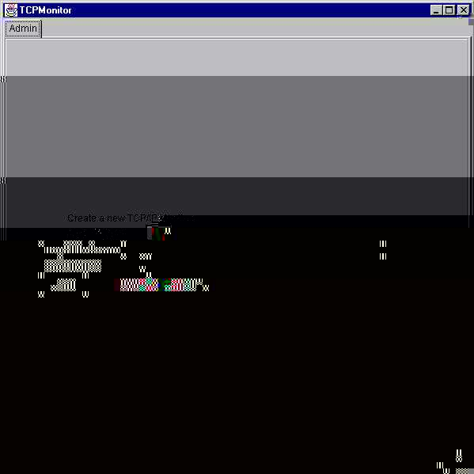

SOAP is widely viewed as the backbone to a new generation of cross-platform cross-language distributed computing applications, termed Web Services.
But Axis isn't just a SOAP engine -- it also includes:
Axis is the third generation of Apache SOAP (which began at IBM as "SOAP4J"). In late 2000, the committers of Apache SOAP v2 began discussing how to make the engine much more flexible, configurable, and able to handle both SOAP and the upcoming XML Protocol specification from the W3C.
After a little while, it became clear that a ground-up rearchitecture was required. Several of the v2 committers proposed very similar designs, all based around configurable "chains" of message "handlers" which would implement small bits of functionality in a very flexible and composable manner.
After months of continued discussion and coding effort in this direction, Axis now delivers the following key features:
We hope you enjoy using Axis. Please note that this is an open-source effort - if you feel the code could use some new features or fixes, please get involved and lend a hand! The Axis developer community welcomes your participation.
Before running the examples in this guide, you'll need to make sure that your CLASSPATH includes (note: if you build axis from a CVS checkout, these will be in xml-axis/java/build/lib instead of xml-axis-beta2/lib):
1 import org.apache.axis.client.Call;
2 import org.apache.axis.client.Service;
3 import javax.xml.rpc.namespace.QName;
4
5 public class TestClient {
6 public static void main(String [] args) {
7 try {
8 String endpoint =
9 "http://nagoya.apache.org:5049/axis/services/echo";
10
11 Service service = new Service();
12 Call call = (Call) service.createCall();
13
14 call.setTargetEndpointAddress( new java.net.URL(endpoint) );
15 call.setOperationName(new QName("http://soapinterop.org/", "echoString"));
16
17 String ret = (String) call.invoke( new Object[] { "Hello!" } );
18
19 System.out.println("Sent 'Hello!', got '" + ret + "'");
20 } catch (Exception e) {
21 System.err.println(e.toString());
22 }
23 }
24 }
(You'll find this file in samples/userguide/example1/TestClient.java)
Assuming you have a network connection active, this program can be run as follows:
% java samples.userguide.example1.TestClient Sent 'Hello!', got 'Hello!' %So what's happening here? On lines 11 and 12 we create new Service and Call objects. These are the standard JAX-RPC objects that are used to store metadata about the service to invoke. On line 14, we set up our endpoint URL - this is the destination for our SOAP message. On line 15 we define the operation (method) name of the Web Service. And on line 17 we actually invoke the desired service, passing in an array of parameters - in this case just one String.
You can see what happens to the arguments by looking at the SOAP request that goes out on the wire (look at the colored sections, and notice they match the values in the call above):
<?xml version="1.0" encoding="UTF-8"?> <SOAP-ENV:Envelope xmlns:xsd="http://www.w3.org/2001/XMLSchema" xmlns:SOAP-ENV="http://schemas.xmlsoap.org/soap/envelope/" xmlns:xsi="http://www.w3.org/2001/XMLSchema-instance"> <SOAP-ENV:Body> <ns1:echoString xmlns:ns1="http://soapinterop.org/"> <arg0 xsi:type="xsd:string">Hello!</arg0> </ns1:echoString> </SOAP-ENV:Body> </SOAP-ENV:Envelope>
The String argument is automatically serialized into XML, and the server responds with an identical String, which we deserialize and print.
Note: to actually watch the XML flowing back and forth between a SOAP client and server, you can use the included tcpmon tool. See the appendix for an overview.
call.addParameter("testParam",
org.apache.axis.Constants.XSD_STRING,
javax.xml.rpc.ParameterMode.IN);
call.setReturnType(org.apache.axis.Constants.XSD_STRING);
This will assign the name testParam to the 1st (and only) parameter
on the invoke call. This will also define the type of the parameter (org.apache.axis.Constants.XSD_STRING)
and whether it is an input, output or inout parameter - in this case its
an input parameter. Now when you run the program you'll get a message that
looks like this:
<?xml version="1.0" encoding="UTF-8"?> <SOAP-ENV:Envelope xmlns:xsd="http://www.w3.org/2001/XMLSchema" xmlns:SOAP-ENV="http://schemas.xmlsoap.org/soap/envelope/" xmlns:xsi="http://www.w3.org/2001/XMLSchema-instance"> <SOAP-ENV:Body> <ns1:echoString xmlns:ns1="http://soapinterop.org/"> <testParam xsi:type="xsd:string">Hello!</testParam> </ns1:echoString> </SOAP-ENV:Body> </SOAP-ENV:Envelope>Note that the param is now named "testParam" as expected.
Here's what a typical response might look like to the echoString method:
<?xml version="1.0" encoding="UTF-8"?>
<SOAP-ENV:Envelope xmlns:xsd="http://www.w3.org/2001/XMLSchema" xmlns:SOAP-ENV="http://schemas.xmlsoap.org/soap/envelope/" xmlns:xsi="http://www.w3.org/2001/XMLSchema-instance"> <SOAP-ENV:Body> <ns1:echoStringResponse xmlns:ns1="http://soapinterop.org/"> <result xsi:type="xsd:string">Hello!</result> </ns1:echoStringResponse> </SOAP-ENV:Body> </SOAP-ENV:Envelope>
Take a look at the section which we've highlighted in red - that attribute is a schema type declaration, which Axis uses to figure out that the contents of that element are, in this case, deserializable into a Java String object. Many toolkits put this kind of explicit typing information in the XML to make the message "self-describing". On the other hand, some toolkits return responses that look like this:
<?xml version="1.0" encoding="UTF-8"?>
<SOAP-ENV:Envelope xmlns:xsd="http://www.w3.org/2001/XMLSchema"
xmlns:SOAP-ENV="http://schemas.xmlsoap.org/soap/envelope/"
xmlns:xsi="http://www.w3.org/2001/XMLSchema-instance">
<SOAP-ENV:Body>
<ns1:echoStringResponse xmlns:ns1="http://soapinterop.org/">
<result>Hello, I'm a string!</result>
</ns1:echoStringResponse>
</SOAP-ENV:Body>
</SOAP-ENV:Envelope>
There's no type in the message, so how do we know what Java object we should deserialize the <result> element into? The answer is metadata - data about data. In this case, we need a description of the service that tells us what to expect as the return type. Here's how to do it on the client side in Axis:
call.setReturnType( org.apache.axis.Constants.XSD_STRING );
This method will tell the Axis client that if the return element is not typed then it should act as if the return value has an xsi:type attribute set to the predefined SOAP String type. (You can see an example of this in action in the interop echo-test client - samples/echo/TestClient.java.)
There is also a similar method which allows you to specify the Java class of the expected return type:
call.setReturnClass(String.class);
OK - so now you know the basics of accessing SOAP services as a client. But how do you publish your own services?
public class Calculator {
public int add(int i1, int i2)
{
return i1 + i2;
}
public int subtract(int i1, int i2)
{
return i1 - i2;
}
}
(You'll find this very class in samples/userguide/example2/Calculator.java.)
How do we go about making this class available via SOAP? There are a couple of answers to that question, but we'll start with the easiest way Axis provides to do this, which takes almost no effort at all!
% copy Calculator.java <your-webapp-root>/axis/Calculator.jwsNow for step 2... hm, wait a minute. You're done! You should now be able to access the service at the following URL (assuming your Axis web application is on port 8080):
http://localhost:8080/axis/Calculator.jws
Axis automatically locates the file, compiles the class, and converts SOAP calls correctly into Java invocations of your service class. Try it out - there's a calculator client in samples/userguide/example2/CalcClient.java, which you can use like this:
% java samples.userguide.example2.CalcClient -p8080 add 2 5 Got result : 7 % java samples.userguide.example2.CalcClient -p8080 subtract 10 9 Got result : 1 %(note that you may need to replace the "-p8080" with whatever port your J2EE server is running on)
To really use the flexibility available to you in Axis, you should get familiar with the Axis Web Service Deployment Descriptor (WSDD) format. A deployment descriptor contains a bunch of things you want to "deploy" into Axis - i.e. make available to the Axis engine. The most common thing to deploy is a Web Service, so let's start by taking a look at a deployment descriptor for a basic service (this file is samples/userguide/example3/deploy.wsdd):
<deployment xmlns="http://xml.apache.org/axis/wsdd/" xmlns:java="http://xml.apache.org/axis/wsdd/providers/java"> <service name="MyService" provider="java:RPC"> <parameter name="className" value="samples.userguide.example3.MyService"/> <parameter name="allowedMethods" value="*"/> </service> </deployment>Pretty simple, really - the outermost element tells the engine that this is a WSDD deployment, and defines the "java" namespace. Then the service element actually defines the service for us. A service is a targeted chain (see the Architecture Guide), which means it may have any/all of: a request flow, a pivot Handler (which for a service is called a "provider"), and a response flow. In this case, our provider is "java:RPC", which is built into Axis, and indicates a Java RPC service. The actual class which handles this is org.apache.axis.providers.java.RPCProvider.
We need to tell the RPCProvider that it should instantiate and call the correct class (e.g. samples.userguide.example3.MyService), and we do so by including <parameter> tags, giving the service one parameter to configure the class name, and another to tell the engine that any public method on that class may be called via SOAP (that's what the "*" means; we could also have restricted the SOAP-accessible methods by using a space or comma separated list of available method names).
WSDD descriptors can also contain other information about services, and also other pieces of Axis called "Handlers" which we'll cover in a later section.
Axis supports scoping service objects (the actual Java objects which implement your methods) three ways. "Request" scope, the default, will create a new object each time a SOAP request comes in for your service. "Application" scope will create a singleton shared object to service all requests. "Session" scope will create a new object for each session-enabled client who accesses your service. To specify the scope option, you add a <parameter> to your service like this (where "value" is request, session, or application):
<service name="MyService"...> <parameter name="scope" value="value"/> ... </service>
% java org.apache.axis.client.AdminClient deploy.wsdd <Admin>Done processing</Admin>This command has now made our service accessible via SOAP. Check it out by running the Client class - it should look like this:
% java samples.userguide.example3.Client "test me!" You typed : test me! %If you want to prove to yourself that the deployment really worked, try undeploying the service and calling it again. There's an "undeploy.wsdd" file in the example3/ directory which you can use just as you did the deploy.wsdd file above. Run the AdminClient on that file, then try the service Client again and see what happens.
You can also use the AdminClient to get a listing of all the deployed components in the server:
% java org.apache.axis.client.AdminClient list <big XML document returned here>In there you'll see services, handlers, transports, etc. Note that this listing is an exact copy of the server's "server-config.wsdd" file, which we'll talk about in more detail a little later.
<deployment xmlns="http://xml.apache.org/axis/wsdd/" xmlns:java="http://xml.apache.org/axis/wsdd/providers/java"> <!-- define the logging handler configuration --> <handler name="track" type="java:samples.userguide.example4.LogHandler"> <parameter name="filename" value="MyService.log"/> </handler> <!-- define the service, using the log handler we just defined --> <service name="LogTestService" provider="java:RPC"> <requestFlow> <handler type="track"/> </requestFlow> <parameter name="className" value="samples.userguide.example4.Service"/> <parameter name="allowedMethods" value="*"/> </service> </deployment>
The first section defines a Handler called "track" that is implemented by the class samples.userguide.example4.LogHandler. We give this Handler an option to let it know which file to write its messages into.
Then we define a service, LogTestService, which is an RPC service just like we saw above in our first example. The difference is the <requestFlow> element inside the <service> - this indicates a set of Handlers that should be invoked when the service is invoked, before the provider. By inserting a reference to "track", we ensure that the message will be logged each time this service is invoked.
<service name="AdminService" provider="java:MSG"> <parameter name="className" value="org.apache.axis.util.Admin"/> <parameter name="allowedMethods" value="*"/> <parameter name="enableRemoteAdmin" value="true"/> </service>
WARNING: enabling remote administration may give unauthorized parties access to your machine. If you do this, please make sure to add security to your configuration!
<beanMapping qname="ns:local" xmlns:ns="someNamespace" languageSpecificType="java:my.java.thingy"/>The <beanMapping> tag maps a Java class (presumably a bean) to an XML QName. You'll note that it has two important attributes, qname and languageSpecificType. So in this case, we'd be mapping the "my.java.thingy" class to the XML QName [someNamespace]:[local].
Let's take a look at how this works in practice. Go look at samples/userguide/example5/BeanService.java. The key thing to notice is that the argument to the service method is an Order object. Since Order is not a basic type which Axis understands by default, trying to run this service without a type mapping will result in a fault (if you want to try this for yourself, you can use the bad-deploy.wsdd file in the example5 directory). But if we put a beanMapping into our deployment, all will be well. Here's how to run this example (from the example5 directory):
% java org.apache.axis.client.AdminClient -llocal:///AdminService deploy.wsdd <Admin>Done processing</Admin> % java samples.userguide.example5.Client -llocal:// Hi, Glen Daniels! You seem to have ordered the following: 1 of item : mp3jukebox 4 of item : 1600mahBattery If this had been a real order processing system, we'd probably have charged you about now. %
TBD - this section will be expanded in a future version! For now look at the DataSer/DataDeser classes (in samples/encoding). Also look at the BeanSerializer, BeanDeserializer, ArraySerializer, ArrayDeserializer and other classes in the org.apache.axis.encoding.ser package.
<typeMapping qname="ns:local" xmlns:ns="someNamespace" languageSpecificType="java:my.java.thingy" serializer="my.java.Serializer" deserializer="my.java.DeserializerFactory" encodingStyle="http://schemas.xmlsoap.org/soap/encoding/"/>
This looks a lot like the <beanMapping> tag we saw earlier, but there are three extra attributes. One, serializer, is the Java class name of the Serializer factory which gets the serializer to be used to marshal an object of the specified Java class (i.e. my.java.thingy) into XML. Two, deserializer, is the class name of a Deserializer factory that gets the deserializer to be used to unmarshall XML into the correct Java class. Finally, the encodingStyle, which is SOAP encoding.
(The <beanMapping> tag is really just shorthand for a <typeMapping> tag with serializer="org.apache.axis.encoding.ser.BeanSerializerFactory", deserializer="org.apache.axis.encoding.ser.BeanDeserializerFactory", and encodingStyle="http://schemas.xmlsoap.org/soap/encoding/", but clearly it can save a lot of typing!)
Axis supports WSDL in three ways:
If you access the service URL in a browser, you'll see a message indicating that the endpoint is an Axis service, and that you should usually access it using SOAP. However, if you tack on "?wsdl" to the end of the URL, Axis will automatically generate a service description for the deployed service, and return it as XML in your browser (try it!). The resulting description may be saved or used as input to proxy-generation, described next. You can give the WSDL-generation URL to your online partners, and they'll be able to use it to access your service with toolkits like .NET, SOAP::Lite, or any other software which supports using WSDL.
You can also generate WSDL files from existing Java classes (see Java2WSDL:
Building WSDL from Java ).
You'll find the AXIS WSDL -> Java tool in "org.apache.axis.wsdl.WSDL2Java". The basic invocation form looks like this:
% java org.apache.axis.wsdl.WSDL2Java (WSDL-file-URL)
This will generate only those bindings necessary for the client. AXIS follows the JAX-RPC specification when generating Java client bindings from WSDL. For this discussion, assume we executed the following:
% cd samples/addr % java org.apache.axis.wsdl.WSDL2Java AddressBook.wsdl
The generated files will reside in the directory "AddressFetcher2". They are put here because that is the target namespace from the WSDL and namespaces map to Java packages. Namespaces will be discussed in detail later.
| WSDL clause | Java class(es) generated |
| For each entry in the type section | A java class |
| A holder if this type is used as an inout/out parameter | |
| For each portType | A java interface |
| For each binding | A stub class |
| For each service | A service interface |
| A service implementation (the locator) |
The Java class generated from a WSDL type will be named from the WSDL type. This class will typically, though not always, be a bean. For example, given the WSDL (the WSDL used throughout the WSDL2Java discussion is from the Address Book sample):
<xsd:complexType name="phone"> <xsd:all> <xsd:element name="areaCode" type="xsd:int"/> <xsd:element name="exchange" type="xsd:string"/> <xsd:element name="number" type="xsd:string"/> </xsd:all> </xsd:complexType>
WSDL2Java will generate:
public class Phone implements java.io.Serializable {
public Phone() {...}
public int getAreaCode() {...}
public void setAreaCode(int areaCode) {...}
public java.lang.String getExchange() {...}
public void setExchange(java.lang.String exchange) {...}
public java.lang.String getNumber() {...}
public void setNumber(java.lang.String number) {...}
public boolean equals(Object obj) {...}
public int hashCode() {...}
}
Notice in the mapping above, the XML type name is "phone" and the generated Java class is "Phone" - the capitalization of the first letter has changed to match the Java coding convention that classes begin with an uppercase letter. This sort of thing happens a lot, because the rules for expressing XML names/identifiers are much less restrictive than those for Java. For example, if one of the sub-elements in the "phone" type above was named "new", we couldn't just generate a Java field called "new", since that is a reserved word and the resultant source code would fail to compile.
To support this kind of mapping, and also to enable the serialization/deserialization of XML attributes, we have a type metadata system which allows us to associate Java data classes with descriptors which control these things.
When the WSDL2Java tool creates a data bean like the Phone class above, it notices if the schema contains any attributes, or any names which do not map directly to Java field/property names. If it finds any of these things, it will generate a static piece of code to supply a type descriptor for the class. The type descriptor is essentially a collection of field descriptors, each of which maps a Java field/property to an XML element or attribute.
To see an example of this kind of metadata, look at the "test.encoding.AttributeBean" class in the Axis source, or generate your own bean from XML which uses attributes or names which would be illegal in Java.
This type may be used as an inout or out parameter. Java does not have the concept of inout/out parameters. In order to achieve this behavior, JAX-RPC specifies the use of holder classes. A holder class is simply a class that contains an instance of its type. For example, the holder for the Phone class would be:
public final class PhoneHolder implements javax.xml.rpc.holders.Holder {
public Phone value;
public PhoneHolder()
{
}
public PhoneHolder(Phone value) {
this.value = value;
}
}
A holder class is only generated for a type if that type is used as an inout or out parameter.
The holder classes for the primitive types can be found in javax.xml.rpc.holders.
The Service Definition Interface (SDI) is the interface that's derived from a WSDL's portType. This is the interface you use to access the operations on the service. For example, given the WSDL:
<message name="empty"> <message name="AddEntryRequest"> <part name="name" type="xsd:string"/> <part name="address" type="typens:address"/> </message> <portType name="AddressBook"> <operation name="addEntry"> <input message="tns:AddEntryRequest"/> <output message="tns:empty"/> </operation> </portType>
WSDL2Java will generate:
public interface AddressBook extends java.rmi.Remote {
public void addEntry(String name, Address address) throws java.rmi.RemoteException;
}
A note about the name of the SDI. The name of the SDI is typically the name of the portType. However, to construct the SDI, WSDL2Java needs information from both the portType and the binding. (This is unfortunate and is a topic of discussion for WSDL version 2.)
JAX-RPC says (section 4.3.3): "The name of the Java interface is mapped from the name attribute of the wsdl:portType element. ... If the mapping to a service definition interface uses elements of the wsdl:binding ..., then the name of the service definition interface is mapped from the name of the wsdel:binding element."
Note the name of the spec. It contains the string "RPC". So this spec, and WSDL2Java, assumes that the interface generated from the portType is an RPC interface. If information from the binding tells us otherwise (in other words, we use elements of the wsdl:binding), then the name of the interface is derived instead from the binding.
Why? We could have one portType - pt - and two bindings - bRPC and bDoc. Since document/literal changes what the interface looks like, we cannot use a single interface for both of these bindings, so we end up with 2 interfaces - one named pt and another named bDoc - and two stubs - bRPCStub (which implements pt) and bDocStub (which implements bDoc).
Ugly, isn't it? But you can see why it's necessary. Since document/literal changes what the interface looks like, and we could have more than one binding referring to a single portType, we have to create more than one interface, and each interface must have a unique name.
Given the following WSDL snippet:
<binding name="AddressBookSOAPBinding" type="tns:AddressBook"> ... </binding>
WSDL2Java will generate:
public class AddressBookSOAPBindingStub extends org.apache.axis.client.Stub
implements AddressBook {
public AddressBookSOAPBindingStub() throws org.apache.axis.AxisFault
{...}
public AddressBookSOAPBindingStub(URL endpointURL,
javax.xml.rpc.Service service)
throws org.apache.axis.AxisFault
{...}
public AddressBookSOAPBindingStub(javax.xml.rpc.Service service)
throws org.apache.axis.AxisFault
{...}
public void addEntry(String name, Address address) throws RemoteException
{...}
}
<service name="AddressBookService"> <port name="AddressBook" binding="tns:AddressBookSOAPBinding"> <soap:address location="http://localhost:8080/axis/services/AddressBook"/> </port> </service>
WSDL2Java will generate the service interface:
public interface AddressBookService extends javax.xml.rpc.Service {
public String getAddressBookAddress();
public AddressBook getAddressBook() throws javax.xml.rpc.ServiceException;
public AddressBook getAddressBook(URL portAddress) throws javax.xml.rpc.ServiceException;
}
WSDL2Java will also generate the locator which implements this interface:
public class AddressBookServiceLocator extends org.apache.axis.client.Service
implements AddressBookService {
...
}
The service interface defines a get method for each port listed in the service element of the WSDL. The locator is the implementation of this service interface. It implements these get methods. It serves as a locator for obtaining Stub instances. The Service class will by default make a Stub which points to the endpoint URL described in the WSDL file, but you may also specify a different URL when you ask for the PortType.
A typical usage of the stub classes would be as follows:
public class Tester
{
public static void main(String [] args) throws Exception {
// Make a service
AddressBookService service = new AddressBookServiceLocator();
// Now use the service to get a stub which implements the SDI.
AddressBook port = service.getAddressBook();
// Make the actual call
Address address = new Address(...);
port.addEntry("Russell Butek", address);
}
}
% java org.apache.axis.wsdl.WSDL2Java --server-side --skeletonDeploy true AddressBook.wsdl
You will see that WSDL2Java generates all the classes that were generated
before for the client, but it generates a few new files:
| WSDL clause | Java class(es) generated |
| For each binding | A skeleton class |
| An implementation template class | |
| For all services | One deploy.wsdd file |
| One undeploy.wsdd file |
If you don't specify the "--skeletonDeploy true" option, a skeleton will not be generated. Instead, the generated deploy.wsdd will indicate that the implementation class is deployed directly. In such cases, the deploy.wsdd contains extra meta data describing the operations and parameters of the implementation class. Here is how you run WSDL2Java to deploy directly to the implementation:
% java org.apache.axis.wsdl.WSDL2Java --server-side AddressBook.wsdl
And here are the server side files that are generated:
| WSDL clause | Java class(es) generated |
| For each binding | An implementation template class |
| For all services | One deploy.wsdd file with operation meta data |
| One undeploy.wsdd file |
public class AddressBookSOAPBindingSkeleton implements AddressBook,
org.apache.axis.wsdl.Skeleton {
private AddressBook impl;
public AddressBookSOAPBindingSkeleton() {
this.impl = new AddressBookSOAPBindingImpl();
}
public AddressBookSOAPBindingSkeleton(AddressBook impl) {
this.impl = impl;
}
public void addEntry(java.lang.String name, Address address)
throws java.rmi.RemoteException
{
impl.addEntry(name, address);
}
}
(The real skeleton is actually much richer. For brevity we just show you the basic skeleton.)
The skeleton contains an implementation of the AddressBook service. This implementation is either passed into the skeleton on construction, or an instance of the generated implementation is created. When the AXIS engine calls the skeleton's addEntry method, it simply delegates the invocation to the real implementation's addEntry method.
WSDL2Java also generates an implementation template from the binding:
public class AddressBookSOAPBindingImpl implements AddressBook {
public void addEntry(String name, Address address)
throws java.rmi.RemoteException {
}
}
This template could actually be used as a test implementation but, as you can see, it doesn't do anything. It is intended that the service writer fill out the implementation from this template.
When WSDL2Java is asked to generate the implementation template (via the --server-side flag), it will ONLY generate it if it does not already exist. If this implementation already exists, it will not be overwritten.
The tool also builds you a "deploy.wsdd" and an "undeploy.wsdd" for each service for use with the AdminClient. These files may be used to deploy the service once you've filled in the methods of the Implementation class, compiled the code, and made the classes available to your Axis engine.
package samples.userguide.example6;
/** * Interface describing a web service to set and get Widget prices. **/ public interface WidgetPrice { public void setWidgetPrice(String widgetName, String price); public String getWidgetPrice(String widgetName); }
Note: If you compile your class with debug information, Java2WSDL will use the debug information to obtain the method parameter names.
Here is an example invocation that produces the wsdl file (wp.wsdl) from the interface described in the previous section:
% java org.apache.axis.wsdl.Java2WSDL -o wp.wsdl -l"http://localhost:8080/axis/services/WidgetPrice" -n "urn:Example6" -p"samples.userguide.example6" "urn:Example6" samples.userguide.example6.WidgetPrice
Where:
The Java2WSDL tool has many additional options which are detailed in the reference guide.
% java org.apache.axis.wsdl.WSDL2Java -o . -d Session -s -S true -Nurn:Example6 samples.userguide.example6 wp.wsdl
This will generate the following files:
Now you have all of the necessary files to build your client/server side code and deploy the web service!
Hence certain interfaces are designated as published, which means that they are relatively stable. As Axis is refactored, the Axis developers will try to avoid changing published interfaces unnecessarily and will certainly consider the impact on users of any modifications.
So if you stick to using only published interfaces, you'll minimise the pain of migrating between releases of Axis. On the other hand, if you decide to use unpublished interfaces, migrating between releases could be an interesting exercise! If you would like an interface to be published, you should make the case for this on the axis-user mailing list.
The current list of published interfaces is as follows:
% java org.apache.axis.utils.tcpmon [listenPort targetHost targetPort]Without any of the optional arguments, you will get a gui which looks like this:

To use the program, you should select a local port which tcpmon will monitor for incoming connections, a target host where it will forward such connections, and the port number on the target machine which should be "tunneled" to. Then click "add". You should then notice another tab appearing in the window for your new tunneled connection. Looking at that panel, you'll see something like this:
Now each time a SOAP connection is made to the local port, you will see the request appear in the "Request" panel, and the response from the server in the "Response" panel. Tcpmon keeps a log of all request/response pairs, and allows you to view any particular pair by selecting an entry in the top panel. You may also remove selected entries, or all of them, or choose to save to a file for later viewing.
The "resend" button will resend the request you are currently viewing, and
record a new response. This is particularly handy in that you can edit the XML
in the request window before resending - so you can use this as a great tool
for testing the effects of different XML on SOAP servers. Note that you may
need to change the content-length HTTP header value before resending an edited
request.
Glossary